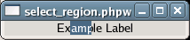

Selects a range of characters in the label, if the label is selectable. If the label is not selectable, this function has no effect. If start_offset or end_offset are -1, then the end of the label will be substituted.
Example 80. Selecting a Region in a GtkLabel
<?php
// Create a window to hold the label.
$window = new GtkWindow();
// Set up the window to close cleanly.
$window->connect_simple('destroy', array('Gtk', 'main_quit'));
// Create a label
$label = new GtkLabel('Example Label');
// Make the label selectable.
$label->set_selectable(true);
// Select a region ("amp").
$label->select_region(2, 5);
// Add the label to the window.
$window->add($label);
// Show the window and start the main loop.
$window->show_all();
Gtk::main();
?>
|

See also: set_selectable() , get_selectable() , get_selection_bounds() ,